Challenge 1
Research
Voor de research was het de bedoeling om naar leuke, interessante en/of bijzondere AR/VR projecten te kijken. Hieronder staan 3 projecten die mij aanspreken.
Harmonix rockband VR
Rockband VR is een experience waar je door middel van je controller gitaar kan spelen. Je speelt hierbij in een viruele band en treed voor een publiek. Als controller kan je een oculus touch gebruiken, maar je hebt ook een gitaar controller nemen deze heeft de vorm van een echte gitaar. Rockband VR is ontwikkeld door Harmonix. Ik vind dit zelf een erg coole VR experience, dat je dus in je eigen woonkamer helemaal los kan gaan en zelfs gaat optreden. Ook vind ik het leuk dat je een gitaar als controller kan gebruiken wat de ervaring extra echt laat maken.
Website: https://www.rockbandvr.com/
To the top
Dit is een VR spel, die je de vrijheid geeft om in je omgeving te bewegen met superkrachten. Het heeft verschillende levels met challenges en vele obstakels. Hun belangrijkste motivatie om het spel te creëren, was om een bewegingsmechanica te creëren die eenvoudig te gebruiken is, de voordelen van VR gebruikt en ook comfortabel aanvoelt om te spelen. Wat ik leuk vind aan het spel is dat het echt lijkt dat je superkrachten hebt. Je wordt ook op verschillende manieren uitgedaagd en kan ook dingen uitproberen die je in het echt nooit zal doen.
Website: http://www.tothetopvr.com/
AR-verpakking Stora enso
Door middel van een scan-code wordt er een allemaal AR-scenes rond het product geplaatst. Bijvoorbeeld een bos, fabriek, kiosk en een spel. Allemaal scenes die te maken heeft met het product. In de scenes kan je ook allemaal dingen aanklikken en informatie vinden over de bv. productie en duurzaamheid. Dit is gecreëerd door het bedrijf flyAR. Ik vind de scenes rond het product er erg schattig en leuk uitzien. Ook vind ik het leuk dat ze de informatie hierdoor op een leuke en leerzame manier overbrengen aan de koper. Ook vind ik cool dat ze best veel scenes hebben uitgewerkt, en je er echt veel informatie uit kan halen.
Website ontwikkelaar: https://flyar.fi//
Website bedrijf van het product: https://www.storaenso.com/
Tinkering
Demo 1
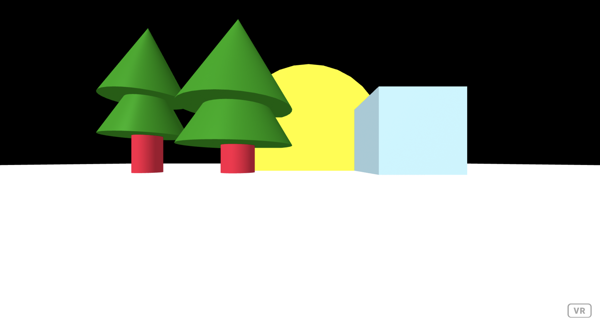 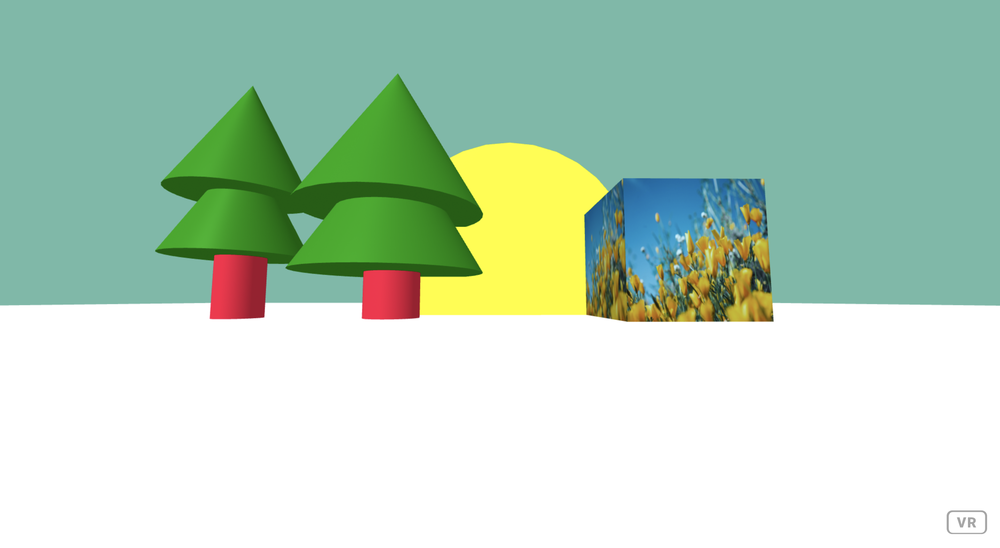 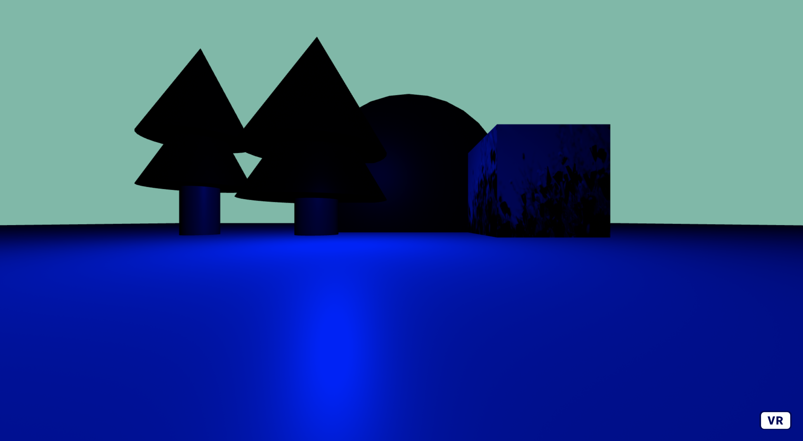 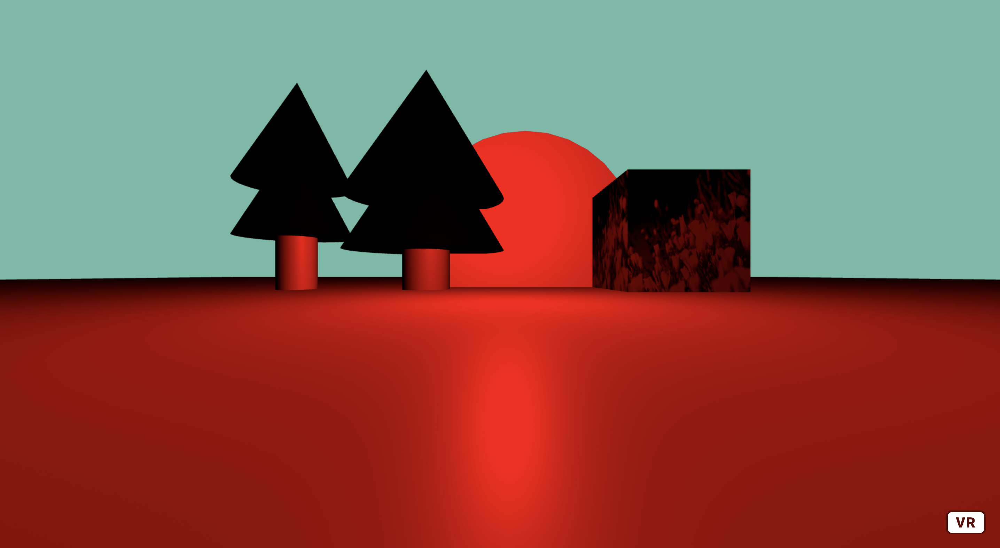 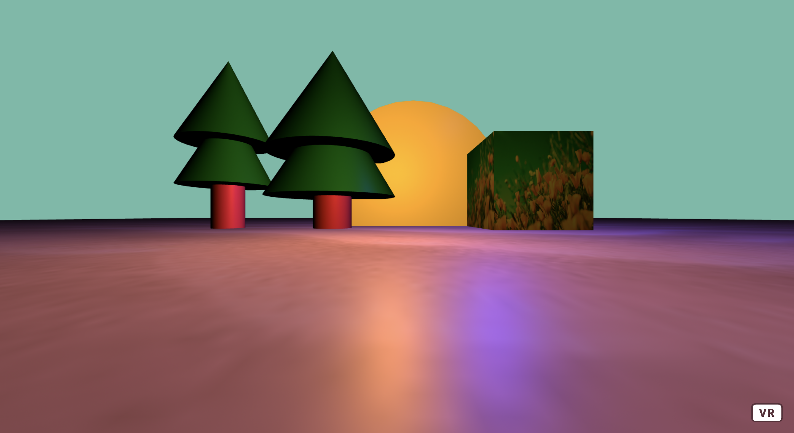Voor mijn eerste demo ben ik bezig geweest in A-frame. Ik heb als eerst een witte ondergrond gemaakt, hierop heb ik een vierkant en een cirkel geplaatst. Toen had ik als idee om boompjes erbij te maken, dit heb ik gedaan door middel van een cilinder en hierop 2 kegels te plaatsten. Daarna heb ik een foto geïmporteerd en gebruikt als materiaal voor het vierkant. Hierna ben ik gaan spelen met het licht, met de kleuren blauw, rood en roze. Uiteindelijk ben ik met de kleuren oranje, roze en blauw gegaan, want dit vond ik er wel mooi uitzien.
Demo 2
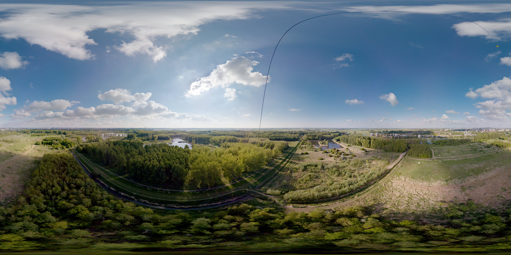


Hierna ben ik verder gegaan met A-frame en ben ik bezig geweest met het creëren van het zonnestelsel. Eerst ben ik gaan kijken naar 360 graden foto’s en had ik deze foto uitgezocht. Daarna had ik een bal toegevoegd en was ik op dat idee gekomen. Voor de planeten heb ik de structuur van de planeet opgezocht en deze toegevoegd als materiaal. Ook heb ik grotere planeten groter gemaakt, en heb ik volgorde van de afstand tot de zon toegepast. Voor planeet Saturnus heb ik ook een ring toegevoegd, want dat heeft deze planeet natuurlijk. En bij de aarde heb ik ook de maan toegevoegd. Zelf vind ik het uiteindelijk best wel leuk geworden.
Demo 3
Verder heb ik dingen uitgeprobeerd met Adobe Aero. Deze app had ik gedownload op mijn telefoon (geluk dat ik een iPhone heb :-p). En heb een paar dingen uitgeprobeerd. Uiteindelijk heb ik 2 kleine demo’s gecreëerd. De eerste is een klein mini bos, met een paar bomen, een vos. Wanneer er op de vos wordt geklikt springt die omhoog en draait die ook 360 graden, dit vond ik zelf best grappig. De tweede is een tafel met stoelen en op de tafel wat drinken en bloemen.
Design and Build
Proces
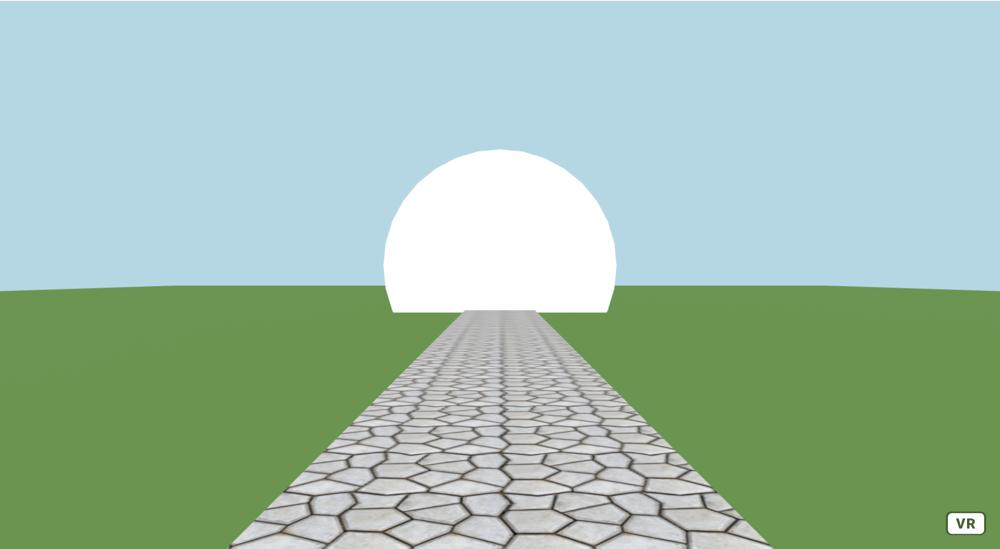 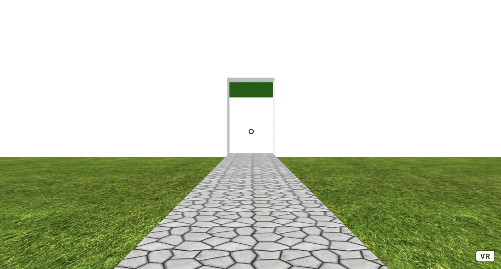 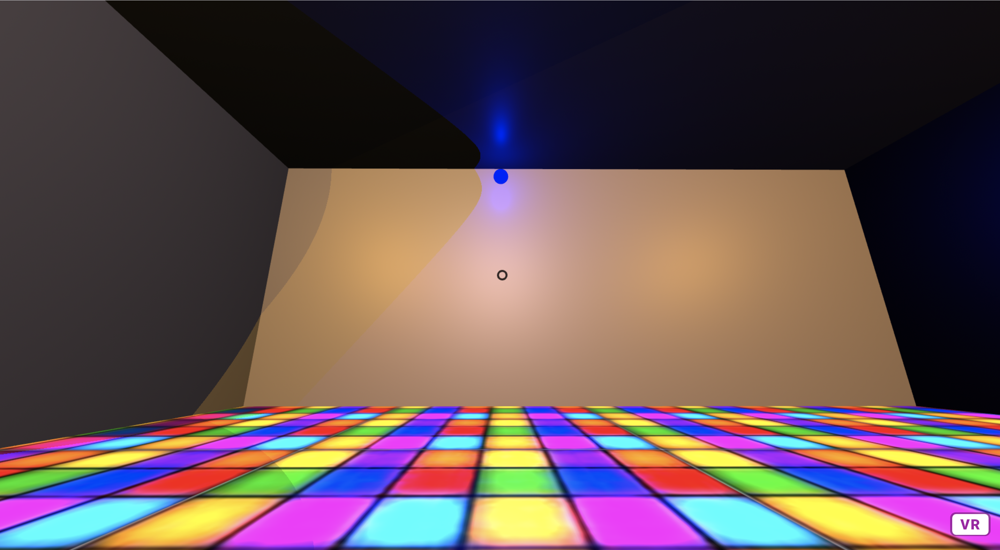 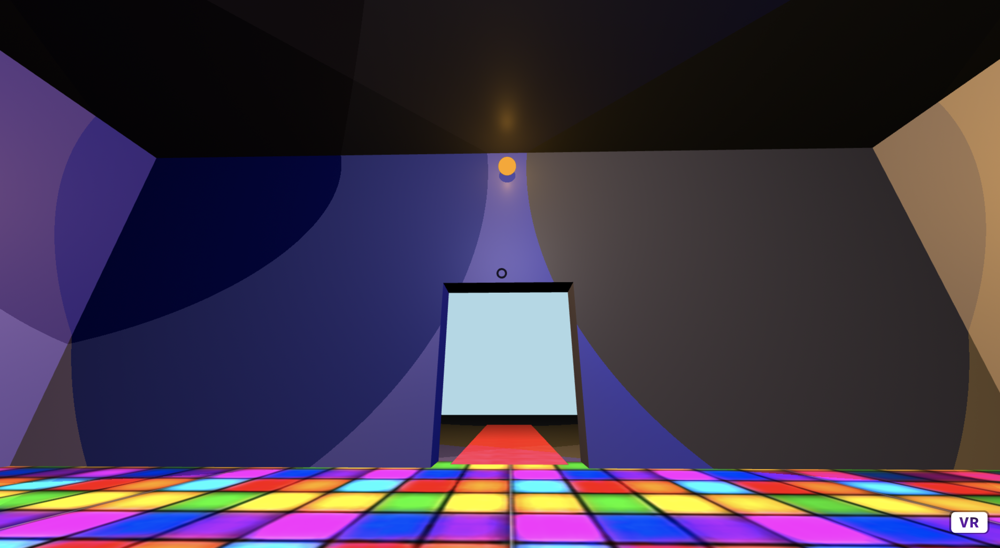 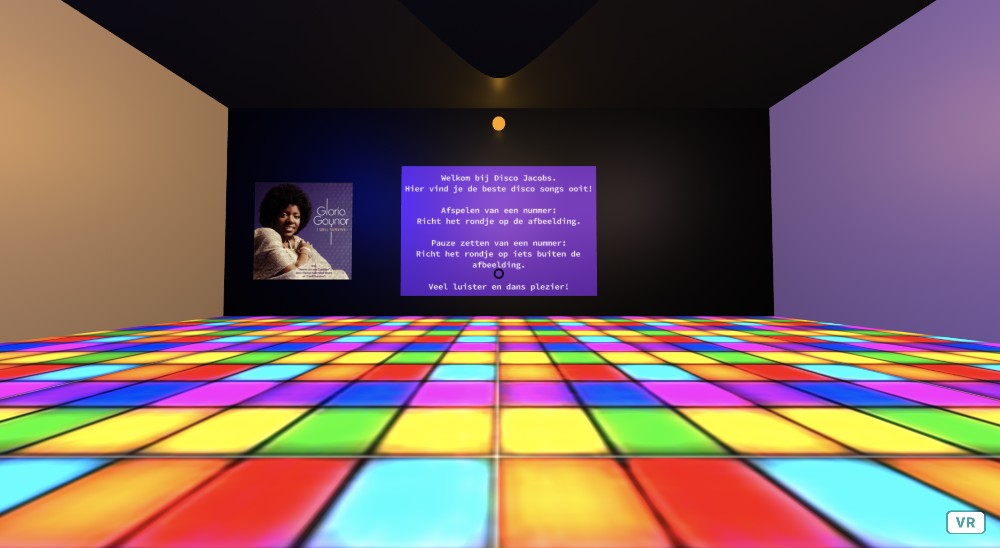
Ik heb voor de challenge een virtuele disco gemaakt, in deze disco kan je de beste disco hits ooit luisteren. In deze corona tijd is het natuurlijk niet mogelijk om uit te gaan naar de club of disco. Door deze experience breng je de disco naar je eigen woonkamer, en kan je nog steeds losgaan op de beste hits. In mijn research heb ik het ook gehad over een vr rockband, waar je ook in je eigen huiskamer los kon gaan op muziek.
Als eerst komt de gebruiker binnen in de disco. Hier is een tekst te lezen met uitleg over de disco, hier wordt verteld hoe een gebruiker een nummer aan en op pauze kan zetten. Door de het rondje (de cursor) te richten op een nummer speelt het nummer zich af. Wanneer de gebruiker nog een keer het rondje op het nummer richt gaat het nummer op pauze.
Link naar VR experience: https://vr-experience-hci.glitch.me
Showcase
Reflect
Ik vind AR/VR zelf echt supergaaf, gewoon het concept dat je in een soort andere wereld leeft, waar zoveel meer mogelijk is dan in de echte wereld.
Ik denk dat er in de toekomst steeds meer gedaan wordt met AR/VR, vooral op het educatieve vlak. Door AR/VR kan je informatie op een veel interessanter en leukere manier brengen. Verder in momenten zoals nu, met corona, kan je door VR en AR toch zoveel beleven en dan gewoon in je eigen woonkamer.
Ik vind zelf dat ik best een leuke VR experience heb gemaakt, het zorgt ervoor dat je eigen woonkamer kan omtoveren tot een disco en helemaal los kan gaan. Het was nog best een gedoe om de muziek werkend te krijgen, maar het resultaat vind ik erg leuk. Alleen een nadeel is dat je wel moet oppassen waar je het rondje richt, anders gaan er allemaal nummers tegelijk aan (maar dit kan ook zorgen voor een leuke remix ;-p).
Er zijn verschillende programma’s die ik uitgeprobeerd heb en zelf vond ik A-frame het beste werken (hier heb ik mijn VR experience ook mee uitgewerkt) . Unreal Engine vond ik best wel moeilijk, omdat het zo uitgebreid was, ook was het voor mijn macbook een groot programma was om te draaien. Spark AR Studio vond ik wel oke. Adobe Aero vond ik wel een goed programma alleen dat is gericht op AR en ik wilde graag verder met VR. Ik vond het zelf leuker om een hele nieuwe wereld en ervaring te creëren. Uiteindelijk vond ik het best wel te doen met A-frame, dit komt ook omdat ik natuurlijk al kan programmeren, maar het programma was ook zeker erg duidelijk en had veel mogelijkheden.